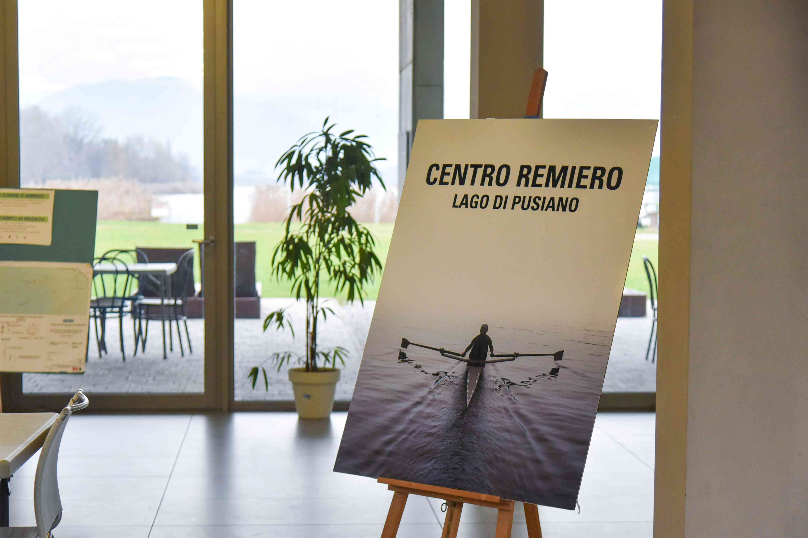

Ruderzentrum Lago di Pusiano
Row to Grow

"Rudern ist eine große Kunst und eine Symphonie der Bewegung. Wenn du es richtig machst, kommst du der Perfektion nahe, und wenn du
diese Perfektion berührst, ist es wie die Berührung des Göttlichen. Es berührt den wahrsten Teil von dir, der deine Seele ist."
George Yeoman Pocock
Wir sind ein hochspezialisiertes Olympisches Ruder- und Kanuzentrum. Wir sind erst seit 5 Jahren in Betrieb und können auf einen beeindruckenden und bedeutenden Lebenslauf verweisen, dank der olympischen und weltweiten Medaillen, die von den Athleten unserer Mitgliedsvereine und Nationalmannschaften errungen wurden, die in unserem Zentrum trainieren. Es gibt 13 Mitgliedsrudervereine des Ruderzentrums Lago di Pusiano (CRLP). Unter ihren Reihen befinden sich viele national wettbewerbsfähige Athleten ab der Juniorenkategorie. Dank der hervorragenden Arbeit in diesem hochmodernen Zentrum wurden zahlreiche internationale Medaillen gewonnen. Mehrere Athleten und Nationalmannschaften haben hier bei uns ihre Erfolge erzielt, darunter Italien, Lettland, Kuba, Japan, Norwegen, Niederlande, Polen, Russland, USA, Schweiz, Neuseeland, Großbritannien, Ungarn und Tschechische Republik.
